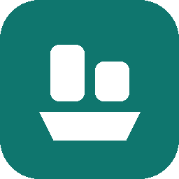

repodockRun any GitHub project
without the setup.
Paste a link, and repodock downloads the project, works out how to start it, and runs it from one window, with live output, CPU and memory use, and an Open in browser button. It asks before it installs or runs anything.

Node.js, Python (Flask, FastAPI, Streamlit, Django), Go, Rust, .NET, Java, Docker Compose, static sites, a project's own start script, or a ready-made download from its releases.
You see the exact command first. Dependencies install only when you agree, and Python ones go into the project's own folder.
Live output, CPU and memory for the whole process tree, update badges, .env editor, logs of past runs, and one-click Stop all.
A normal installer with its own window and tray icon, so your apps keep running when you close it. Also on macOS and Linux.
Download
No admin rights or Python needed.
If Windows says it protected your PC, click More info, then Run anyway.
scoop bucket add repodock https://github.com/UmutAlisoglu/repodock scoop install repodock
pipx install git+https://github.com/UmutAlisoglu/repodock
Opens in your browser. Needs Python 3.9 or newer.
Add a "Run with repodock" button to your README
People who have repodock can open your project with one click. Everyone else gets a page that explains how to get it.
Browser extension
Adds a "Run with repodock" button to every GitHub project page, and a "Download for your system" button to release pages that picks the right file for your computer. For Chrome, Edge and Firefox. How to install it.